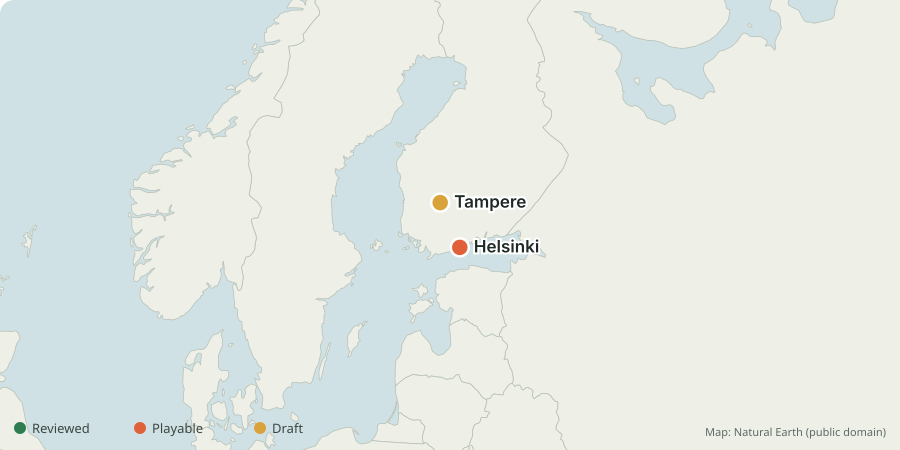

Explore the world, and build your own corner of it.
Explore real cities in your browser: drive, get out and walk, take a bike or scooter, and greet the people you meet. Open map data gives each city its shape; contributors add the details that make it feel like home.
How it started
Worldhood began as a one-night experiment: Helsinki rebuilt as a driveable open world, from the city's own 3D model, streets, trees and tram lines. People immediately asked the same two questions: can I drive my city? and can I help make the engine better?
The vision
One shared game, many real cities, with room for people to build their own corner. Improve a place you know, or improve the engine that every city uses. The current game is single-player. Building inside the game and visiting other players’ creations are future ambitions; today, city contributions happen through the repository.
Start with a few streets and make them worth exploring. Open data gives a place its shape; local knowledge and permitted reference material make it recognisable. Draft areas are welcome with their limitations explained. Read the project vision to see where we want to go together.

Build your city
- Point your coding agent at the repository, or clone it yourself.
- Run
npm run city:newandnpm run city:build. These tools turn available open map data into a starting version of your city. - Refine it street by street using permitted reference material, following the playbook. Optimise it locally until it's as good as you can make it.
- Open a pull request with your sources, screenshots and known gaps so others can review and build on it.
Not a programmer? The plain-language guide takes you through it step by step.
Prefer engine work? Improve movement, cameras, touch controls, accessibility or loading; build on the bike, scooter and conversation systems; or try new activities, soundscapes and weather. The wishlist is open.
Open, credited, free
The code is MIT-licensed. Map data stays under its own open licences (city open data, CC BY 4.0; OpenStreetMap, ODbL) and is credited in the game. No account or installation is needed to play. Some scenery contains fictional in-game advertising; credits and permissions are listed in the repository.